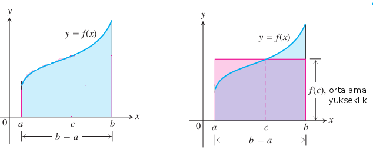

Ana teoriyi ispatlamadan önce iki diğer teoriden bahsetmemiz, ispatlamamız lazım. Bu teorilerden biri Geçiş Değeri Teorisi (Intermediate Value Theorem) diğeri Tanımlı Entegraller İçin Ortalama Değer Teoremi (Mean Value Theorem for Definite Integrals). Geçiş Değeri Teorisi basitçe şunu söyler
Teori
$[a,b]$ aralığında sürekli bir fonksiyon $y=f(x)$, $f(a)$ ve $f(b)$ arasındaki her değeri muhakkak alır. Bir diğer değişle, eğer $y_o$, $f(a)$ ve $f(b)$ arasındaki bir değer ise $[a,b]$ aralığındaki bir $c$ için muhakkak $y_0 = f(c)$ olmalıdır.
Geometrik olarak bu teori $y$ eksenini $f(a)$ ve $f(b)$ arasında kesen $y=y_0$ yatay çizgisinin $y=f(x)$ fonksiyonunu muhakkak, en az bir kez keseceğidir. Grafik altta.
Sezgisel olarak bu anlamlı değil mi? Eğer sürekli bir fonksiyon var ise, $f(a)$'dan $f(b)$'ye giderken o aralıktaki her sayıya bir kez "uğramaya" mecburuz. Etraflarından dolaşmamız mümkün değil, çünkü kesintili bir fonksiyon değil, kesintisiz / sürekli bir fonksiyonumuz var. Bu teorinin daha detaylı ispatı için [1]'e bakılabilir.
Maks-Min Eşitsizliği
Eğer $[a,b]$ aralığında $f$, maksimum değer $\max f$'e ve minimum değer $min \ f$'e sahipse,
$$ \min f \cdot (b-a) \le \int_a^b f(x) \mathrm{d} x \le \max f \cdot (b-a) $$
demektir.

Bu kural diyor ki $f$'in $[a,b]$ üzerindeki entegrali hiçbir zaman $f$'in minimum'u çarpı $[a,b]$ aralığının uzunluğu'ndan küçük olamaz, ve $f$'in maksimumu çarpı $[a,b]$ aralığının uzunluğu'ndan büyük olamaz.
İspat
Eğer $(b-a)$'yi $ \sum_{k=1}^n \Delta x_k$ olarak görürsek
$$ \min \ f \cdot (b-a) = \min \ f \cdot \sum_{k=1}^n \Delta x_k $$ $$ = \sum_{k=1}^n \min \ f \cdot \Delta x_k $$
$[a,b]$ aralığındaki herhangi bir değer $c_k$ için
$$ \le \sum_{k=1}^n f(c_k) \cdot \Delta x_k $$
Öyle değil mi? $min \ f$ değeri en küçük değer ise, $[a,b]$ aralığındaki herhangi bir nokta $c_k$'nin $f$ değeri bu değere ya eşit, ya da ondan büyüktür. Yani $min \ f \le f(c_k)$. Devam edersek
$$ \le \sum_{k=1}^n \max f \cdot \Delta x_k $$
Üstteki benzer mantığı takip ediyor, bu sefer $f(c_k) \le \max f $. Son ifadedeki $max$'i dışarı alabiliriz.
$$ = \max f \sum_{k=1}^n \cdot \Delta x_k $$
$$ = \max f (b-a) $$
Ortalama Değer Teoremi
Eğer $f$ fonksiyonu $[a,b]$ arasında sürekli ise o zaman $[a,b]$ aralığında olan bir $c$ noktasında
$$ f(c) = \frac{1}{b-a}\int_a^b f(x) \mathrm{d} x $$
eşitliği doğru olmalıdır. Yani alttaki resimde sol grafikteki mavi alanın $b-a$ ile bölünerek elde edilen ortalama değeri, $[a,b]$ aralığındaki bir $c$ üzerinden $f(c)$'ye muhakkak eşittir. Ya da bir kenarı $f(c)$, diğeri $b-a$ olan bir diktortgenin alanı (alt sağdaki resim), mavi alanın tamamına eşit olacaktır.

Maks-Min Eşitsizliğinin iki tarafını $b-a$'ya bölersek
$$ \min f \le \frac{1}{b-a} \int_a^b f(x) \mathrm{d} x \le \max f $$
elde ederiz. Eğer Geçiş Değeri Teorisi doğruysa, $\min f$ ve $\max f$ arasındaki tüm noktalar ziyaret edilmelidir. O zaman böyle bir $f(c)$ kesinlikle var demektir.
Calculus'un Temel Teoremi
Teori
Eğer $f$ fonksiyonu $[a,b]$ arasında sürekli ise o zaman
$$ F(x) = \int_a^x f(t) \mathrm{d} t $$
fonksiyonu da $[a,b]$ arasında süreklidir, ve bu fonksiyonun türevi $f(x)$'in kendisidir.
Yani
$$ F'(x) = \frac{d}{dx}\int_a^x f(t) \mathrm{d} t = f(x) $$

İspat
Türevin tanımını direk $F(x)$ üzerinde uygulayalım, $[a,b]$ içinde olan $x$ ve $x+h$ aralığını alalım, ve
$$ \frac{F(x+h)-F(x)}{h} $$
bölümünün limitinin, $h \to 0$ iken, $f(x)$'e gittiğini göstermeye çalışalım. $F(x+h)$ ve $F(x)$ fonksiyonlarını entegralleri üzerinden tanımlayalım. O zaman üstteki formülün bölüm kısmı
$$ F(x+h) - F(x) = \int_a^{x+h} f(t) \mathrm{d} t - \int_a^x f(t) \mathrm{d} t $$
Entegrallerin toplam kuralına göre üstteki formülün sağ tarafı
$$ \int_x^{x+h} f(t) \mathrm{d} t $$
ifadesidir. O zaman bölümün tamamı
$$ \frac{F(x+h)-F(x)}{h} = \frac{1}{h} \int_x^{x+h} f(t) \mathrm{d} t $$
Ortalama Değer Teoremine göre, üstteki eşitliğin sağındaki ifadenin, $x$ ve $x+h$ aralığında $f$'in aldığı değerlerden birine aynen eşit olduğunu biliyoruz. Yani o aralıktaki bir $c$ için
$$ \frac{1}{h} \int_x^{x+h} f(t) \mathrm{d} t = f(c) $$
kesinlikle doğru olmalı. Şimdi, $h \to 0$ oldukça, $x+h$ mecburen $x$'e yaklaşmak zorunda kalacaktır, çünkü $c$, $x$ ile $x+h$ arasında sıkışıp kalmıştır. $f$ fonksiyonu $x$ noktasında sürekli olduğuna göre, o zaman $f(c)$, $f(x)$'e yaklaşmalıdır.
$$ \lim_{h \to 0} f(c) = f(x) $$
Şimdi elimizdeki bu bilgiyle başa dönersek,
$$ \frac{dF}{dx} = \lim_{h \to 0} \frac{F(x+h)-F(x)}{h} $$
$$ = \lim_{h \to 0} \frac{1}{h} \int_x^{x+h} f(t) \mathrm{d} t $$
$$ = \lim_{h \to 0} f(c) $$
$$ = f(x) $$
Kaynaklar
[1] Hass, Thomas Calculus 11th Edition